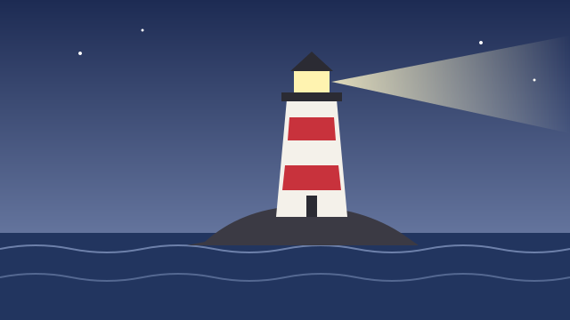
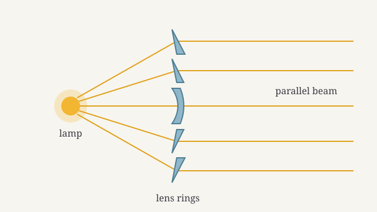

Notes on light, weather and the people who kept watch on the coast.
A lighthouse has one job: to be seen, by day and by night, from as far away as possible. Everything else about it follows from that. The tower is tall because the curve of the Earth hides a low light; a lamp thirty metres above the sea can be seen from about twenty kilometres away by a sailor standing on deck.
By day the tower itself is the signal. That is why so many are painted in bold bands, spirals or checks: each pattern is different, so a captain who knows the coast can tell one tower from another at a glance.

At night the pattern of the light does the same work. One light shows a single white flash every five seconds; the next one along the coast shows two red flashes every ten. The pattern is printed on charts, so a sailor who counts the flashes knows exactly where they are.
Before automation, keepers lived at the light, often with their families. The work was regular and unglamorous:
"Fog came in at four. Sounded the horn until nine. Two schooners passed safely to the north."
— a typical log entry
In 1822 the French engineer Augustin Fresnel designed a lens made of rings of glass prisms. It bent light from a single lamp into a narrow, powerful beam, using a fraction of the glass a solid lens would need. Within a few decades Fresnel lenses were in lighthouses all over the world, and some of them still turn today.

| Order | Focal length | Typical use |
|---|---|---|
| First | 920 mm | Major sea coast lights |
| Third | 500 mm | Coastal lights and large bays |
| Sixth | 150 mm | Harbours and piers |
Almost every lighthouse is automatic now. Satellites tell ships where they are to within a few metres, and the lamps switch on by themselves at dusk. Yet many lights still shine, because a light on the horizon is something a sailor can trust when every screen on board has gone dark.
Many towers are open to visitors in summer. If you ever climb one, count the steps on the way up, and look for the keeper's initials scratched into the glass.
A sample page for trying out Meridian. Text and drawings are free to use.